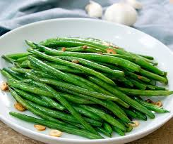
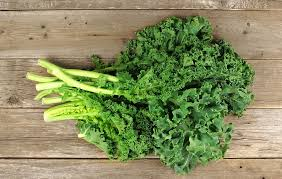
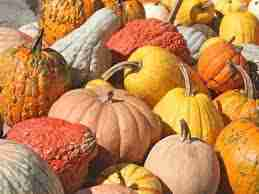
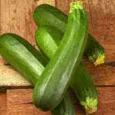
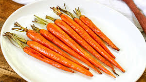

Can dogs eat sausage?
The definite answer to whether or not your dog can eat sausage is no. It is however not an emergency if your dog happens to eat one sausage that might have fell from your dinner plate. It is always best for us humans and our pets too to avoid oily, fatty, and salty foods, and sausage ticks all of those boxes as meat. Sausage should never be a part of a dog's diet and will cause health problems if done nonetheless.
Does your pet take a look in your direction with those wide and sad eyes, praying that you will toss a bit of sausage their way? Sure, they most likely like it, however it is never ever an excellent option to provide them with large pieces of sausage. You can securely provide a little bite, however that is just about it. If you do offer your dog a little bit of sausage, ensure that it is totally cooked, as raw sausage can trigger salmonella.
Due to the fact that sausage it is high in fat, one of the primary factors sausage is bad for pet dogs is. What would you say if you found out that most sausages can consist of up to as much as half fat? This is never healthy for any type of pet, due to the fact that it will not only cause weight problems, it will likewise cause a great deal of other health concerns, consisting of heart issues such as, diabetes and pancreatitis.
You will find that sausage is usually filled with salt, spices and other flavorings that are bad for pets. These spices can consist of garlic and onions, which are both really bad for any pet, and can trigger red blood cell damage.
Much Healthier Meat Options For Pets
Do not offer your pets those Vienna sausages you cooked for yourself. Rather, there are much healthier alternatives that dogs love that will not trigger weight problems or other heart issues when given in small amounts. There are sausage-like doggy treats you can give them that are made particularly for canines, this means that they are high in different types of nutrients.What should I do if my dog gets sick from eating sausage?
If for some reason your dog consumed too much sausage and has started to show signs of being sick such as vomiting or nausea, give your dog water as this will help to stop the body from being dehydrated from all the salt and spices that are found in sausages.
The next step would be to keep food away from your dog for the next 24 hrs for the sausage to pass. This will give the stomach enough time to settle. Be sure to fill the dog's bowl up whenever you see it go below a certain point as you do not want your dog to be thirsty while you are not around. Your dog might experience dehydration for a couple of days so it would be wise to instead have two bowls of water for him/her to drink from to be on the safe side.
Do you cook with sausage grease?
There are people in my family who likes cooking other foods with sausage grease. This food that is cooked with the sausage grease should however never be fed to your dog as this grease has made whatever you cooked more like sausage.
Possible symptoms after feeding your dog sausage
- Lethargy (this is the lack of energy and enthusiasm.
- Diarrhea
- Loss of appetite
- Vomiting
- Nausea
Feed your dogs these 5 vegetables instead of sausages
- Green Beans 
- Kale 
- Pumpkin 
- Zucchini 
- Carrots 
Especially great for dogs that are overweight. Dogs see green beans as treats instead of nasty vegetables like kids do.
Kale is great for humans. It is also great for dogs as it helps to maintain a healthy heart.
A perfect source of fiber to help with your dog's bowel movement.
Also a good source of fiber. Your dog will love this as the taste is like no other.
A great source of vitamin c and when given raw is a great chew toy that also cleans the teeth.
Are sausages okay for dogs?
Feeding your dog sausage should be avoided as much as possible. There are many other alternatives that are beneficial to your dog's health.
Are sausages bad for dogs?
Yes, sausage is bad for dogs as it has high salt and fatty contents. Some sausages also have onion and garlic powder included. Onion and garlic powder are bad for dogs and should not be fed. Any dog that eats onions or garlic is at risk of developing anemia. These ingredients alone should tell you all you need to know as to the question why is sausage bad for dogs.
Can dogs eat garlic sausage?
Garlic is a part of the Allium family which also includes chives, and onions. These are all poisonous to dogs but garlic is 5 times more dangerous than the others. Onion is more dangerous to cats and some types of Japanese dogs such as the the Akita. Garlic has the potential to cause damage to the red blood cells. These red blood cells will rupture and lead to anemia in your dog. Some signs of anemia in your dog are pale gums, lethargy, increased heart rate, intolerance to exercise.
Is your dog sick after eating sausage?
If your dog ever gets sick after eating sausage, the best thing to do would to try and find out how much sausage he/she has eaten. If it is more than you are comfortable with him/her eating, call a veterinarian.
The garlic poisoning signs can at times be delayed for a couple days which yours dog will more than likely not show any signs.
Can Cats eat sausage?
Just like dogs, sausage is dangerous to cats if taken in large amounts. You must avoid feeding your cat sausage and take the necessary steps to get your cat well if somehow they ingest some.
Is chicken sausage healthier than pork sausage?
Nobody answers this question better than Mathew Gordon on Quora.
Chicken sausage is usually healthier than pork sausage but, as always, check the nutrition information on any prepackaged product. Stats I tend to look for on the nutrition information of prepackaged sausages include: calories per gram, fat per gram (saturated and unsaturated), protein per gram, and anything else that stands out (e.g.: whether the sausage has an unusually high sodium content). If you want to get really serious about your sausage healthiness comparisons, you can make an Excel spreadsheet of your favourite brands, but I don’t recommend spending your weekend that way. As with many foods, it’s all about ingredients and preparation. If you have the option of buying either from a butcher or meat counter such that it is not pre-packaged, the chicken sausage will usually be healthier.
Conclusion
Is sausage safe for dogs? No, not in large amounts. Tasting it will not cause harm, but eating it will. Feeding your dog sausage is a bad idea. Many other alternatives will keep your furry friend happy.